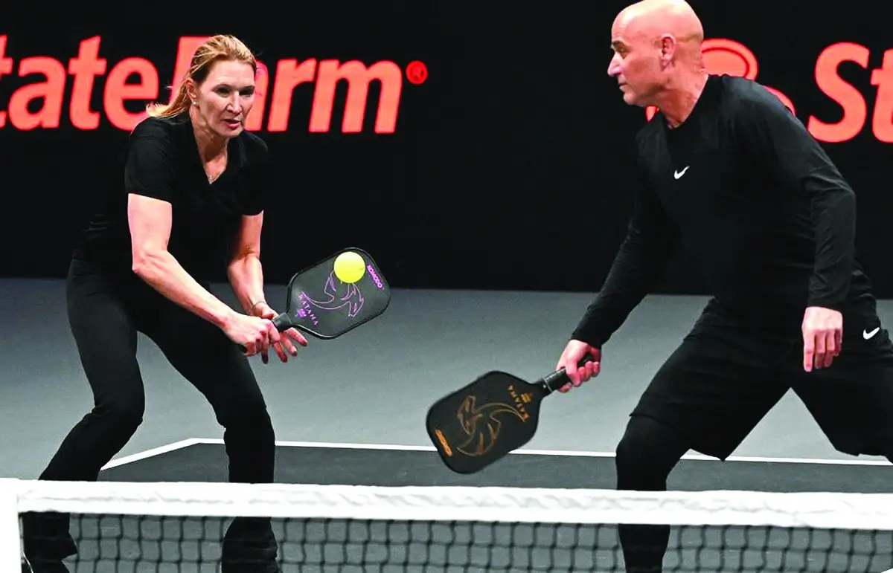
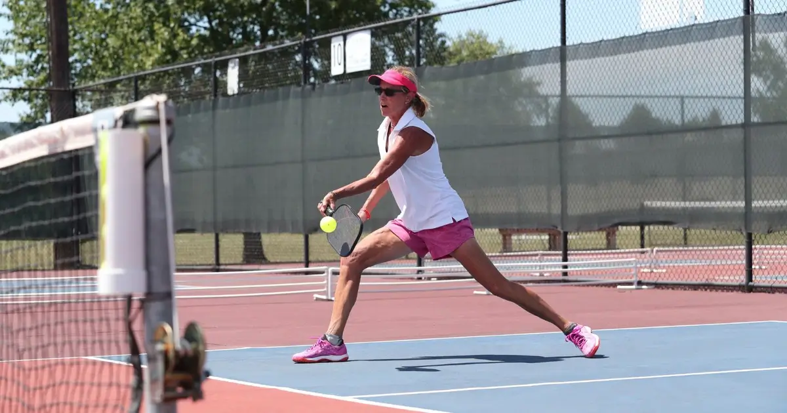
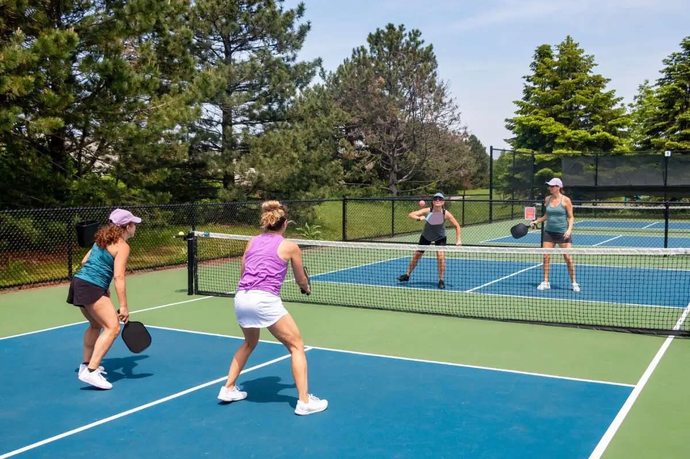

Pickleball: Bạo phát liệu có bạo tàn?
TTCT -Đông đảo người Việt Nam lần đầu biết đến khái niệm pickleball chỉ mới cách đây 2 năm. Nhưng giờ đây, môn thể thao yêu thích của Bill Gates xuất hiện khắp nơi, từ Sài Gòn đến Hà Nội.
Cộng đồng pickleball tại Việt Nam hiện ước tính có khoảng 15.000 người chơi thường xuyên, con số đã có thể so sánh với những môn thể thao đại chúng lâu đời như tennis, bóng bàn, bóng chuyền, bóng rổ…

Lấn sân tennis
Vì sao pickleball bùng nổ? Đây là câu hỏi đã được đặt ra ở cả những nước phương Tây lẫn Việt Nam. Nhìn chung, pickleball tạo cảm giác dễ chơi hơn so với quần vợt.
Sân thi đấu chuẩn của pickleball có kích thước 13,4x6,1m, chỉ bằng khoảng một nửa so với sân tennis - kích thước chuẩn 23,77x8,23m. Về kỹ thuật, pickleball chơi cũng đơn giản và dễ hơn tennis, không quá đòi hỏi các yếu tố sức mạnh, tốc độ, thể lực, thể hình…
Dễ hiểu vì sao ở Việt Nam, pickleball lại bùng nổ đến vậy. Một bộ phận đáng kể người chơi tennis chuyển sang chơi môn này, rồi quyết định ở lại khi nhận thấy pickleball thực sự phù hợp với thể trạng họ hơn.
Trong khi đó, phần đông giới trẻ lại bị thu hút bởi xu hướng, cùng các yếu tố như các KOL chơi pickleball, dụng cụ, trang phục bắt mắt… Và nữa, chi phí chơi món này cũng dễ chịu hơn tennis.
Trần Vũ Cung, HLV tennis chuyển sang dạy pickleball, chia sẻ: "Thực sự là từ ngày chuyển qua huấn luyện pickleball, số lượng học viên của tôi tăng rất đều. Số lượng người mới chơi, tức chưa từng chơi các môn cầm vợt, cũng đông".
"Họ thử sức vì tò mò và do dễ lập hội nhóm. Giữa tennis và pickleball thực sự có nhiều điểm chung, và nhìn chung pickleball dễ chơi hơn. Những người đã chơi tennis khi chuyển qua pickleball cũng hòa nhập rất nhanh".
Pickleball và tennis gần gũi đến mức… nhiều lúc va chạm sân bóng với nhau. Rất nhiều chủ sân tennis ở Việt Nam đã tận dụng mặt sân để cho người chơi pickleball thuê.
Điều này làm nổ ra tranh cãi, rằng pickleball đang "lấn sân" tennis. Rất nhiều tay vợt tennis cảm thấy bị xâm phạm môi trường tập luyện vì pickleball, đến mức nhiều lúc họ không thể đặt được sân.
Không chỉ ở Việt Nam, chính Mỹ - nơi khai sinh pickleball, cuộc chiến giữa hai môn thể thao này cũng gay gắt. Tại Monterey Park, thành phố phía đông Los Angeles, đã nổ ra một cuộc biểu tình nho nhỏ, nhằm phản đối việc cho phép chơi pickleball trên sân quần vợt.
Đích thân cảnh sát trưởng thành phố, ông Scott Wiese và Andy Schwick, đại diện của Hiệp hội Tennis Mỹ, đã phải tổ chức một buổi gặp gỡ để giải quyết vụ việc này.
"Thật tuyệt vời khi ngày càng có nhiều người chơi thể thao. Tôi ủng hộ pickleball, nhưng không thể để tennis bị ảnh hưởng. Tôi lo ngại về việc kẻ vạch chơi pickleball lên chính sân tennis. Nhiều người trẻ có thể vì vậy mà không còn cơ hội chơi tennis. Dù sao, đây mới thực sự là môn thể thao đại chúng và có truyền thống lâu đời", ông Schwick nói.

Duy trì thế nào khi chưa có đỉnh cao?
Ngày càng có nhiều người chơi pickleball, dẫn đến việc nhiều nhà đầu tư lao vào môn thể thao mới mẻ này. Từ đó cũng làm dấy lên một lo ngại: liệu phong trào pickleball có bạo phát rồi sẽ bạo tàn?
Pickleball thực ra ra đời đã được 60 năm. Nhưng mãi đến khoảng tháng 5-2024, môn thể thao này mới bùng nổ trên toàn cầu, thậm chí là tại chính quê hương Mỹ. Thống kê của Hiệp hội Pickleball Mỹ cho thấy vào năm 2017, quốc gia này mới chỉ có khoảng 2 triệu người chơi pickleball. Nhưng đến năm 2024, con số này đã tăng lên 14 triệu.
Sự xuất hiện của các KOL là lý do quan trọng giúp pickleball bùng nổ. Vì đặc tính dễ chơi, rất nhiều ngôi sao điện ảnh, ca nhạc đã thử sức với pickleball, và dễ hiểu khi một làn sóng mạnh mẽ được tạo ra.
Các KOL tạo ra hiệu ứng lan tỏa, nhưng lại không có giá trị nhiều về chuyên môn. Mặt khác, pickleball được nâng tầm nhờ chính những ngôi sao quần vợt kỳ cựu. Vợ chồng Andre Agassi - Steffi Graf là hai trong số các tay vợt tennis đỉnh cao đã chuyển hướng sang môn thể thao mới mẻ này.
"Tôi năm nay đã 53 tuổi. Ở độ tuổi này, có bao nhiêu môn mà bạn tự tin rằng mình còn có thể cải thiện kỹ năng? Pickleball là môn thể thao hiếm hoi tạo ra cơ hội đó. Pickleball thường bị nhìn nhận là môn thể thao nhẹ nhàng và mặt sân nhỏ. Nhưng tốc độ của nó không hề chậm", Agassi nói.
Đầu năm tới, Agassi và vợ Steffi Graf sẽ chạm trán đôi Maria Sharapova - John McEnroe trong trận "pickleball slam 2", với giải thưởng 1 triệu USD dành cho bên chiến thắng. Đó là một trong những ví dụ cho thấy pickleball đang từng bước tạo ra tính thưởng thức, khi những ngôi sao quần vợt tham gia cuộc chơi.
"Nên nhìn nhận thoáng về môn thể thao này. Ở Mỹ, rất nhiều ông chủ sân tennis phiền muộn với tình trạng ế ẩm. Pickleball ra đời giúp giải quyết phần nào tình trạng đó. Tôi nghĩ mọi tay vợt tennis đều có thể thủ sẵn một cây vợt pickleball trong túi", Agassi nói.

Ben Johns, một trong những tay vợt pickleball hàng đầu thế giới, đã kiếm được 2,5 triệu USD tiền thưởng và các khoản tài trợ trong năm 2024. Con số này tăng đột biến so với 3 năm trước - thời điểm thu nhập của anh chỉ mới khoảng 250.000 USD. Vào năm 2018, khi tập tành đi lên chuyên nghiệp ở pickleball, thu nhập hằng năm của Johns mới vào khoảng 50.000 USD.
Có thể chưa so sánh được với tennis, nhưng mức thu nhập của các tay vợt pickleball hàng đầu đã tương đương với cầu lông hoặc bóng bàn - những môn cầm vợt nhà nghề đã lâu đời và có tầm thế giới.
Điểm khác biệt nằm ở tầng lớp phía dưới, khi Hiệp hội Pickleball Mỹ vẫn chưa thể đưa ra thống kê chính xác về thu nhập của các VĐV pickleball trong top 100 hay 1000.
Các tay vợt tốp đầu thế giới, hoặc mỗi quốc gia, có thu nhập cao vì nhà tài trợ tận dụng hiệu ứng hình ảnh pickleball tạo ra. Nhưng để trở thành một "nghề nghiệp" thực sự dành cho VĐV, pickleball vẫn chưa có hệ thống đào tạo chuyên nghiệp rõ ràng, chưa có học viện, hay hệ thống giải đấu bền vững phủ khắp mọi nơi.
Pickleball tăng tốc chóng mặt trong 5 năm, tạo nên câu chuyện lạ lùng của làng thể thao. Nhưng để có thể trở thành môn thể thao đại chúng như tennis, cầu lông, bóng bàn, "đứa em út" của nhóm môn cầm vợt cần thêm thời gian.
Tính tự do của Pickleball
Ông Phạm Duy Sơn, chủ một cụm sân pickleball tại TP Thủ Đức, TP.HCM, cho biết chi phí đầu tư bình quân cho mỗi sân pickleball vào khoảng 200 triệu đồng, chưa bao gồm dịch vụ đi kèm.
"Riêng cụm sân của tôi có chi phí khoảng 250 triệu/sân, sân đúng tiêu chuẩn và không có mái che. Tôi làm sân từ đầu năm 2024, khi đó vẫn còn rất ít người chơi, nhưng tôi vẫn tập trung vào các khóa đào tạo. Đến khoảng tháng 4-5, phong trào pickleball bùng nổ khi có sự xuất hiện của các KOL".
Ông Sơn cũng cho biết pickleball nên đi theo mô hình xã hội hóa, thay vì "gò" vào khuôn khổ bởi một liên đoàn, hiệp hội thống nhất.
"Nhiều người cho rằng pickleball ở Việt Nam nên sớm có liên đoàn, để rồi được đưa vào Olympic, phát triển như cầu lông, tennis. Nhưng cá nhân tôi nghĩ đây là môn thể thao thuần tính xã hội hóa, không nên bị gò bó bởi một liên đoàn, hiệp hội nào cả. Điển hình là ở Mỹ có rất nhiều hiệp hội, mỗi hiệp hội lại tạo ra luật chơi khác nhau. Như vậy mới thể hiện được tính tự do của pickleball", ông Sơn nói.
Bài viết liên quan